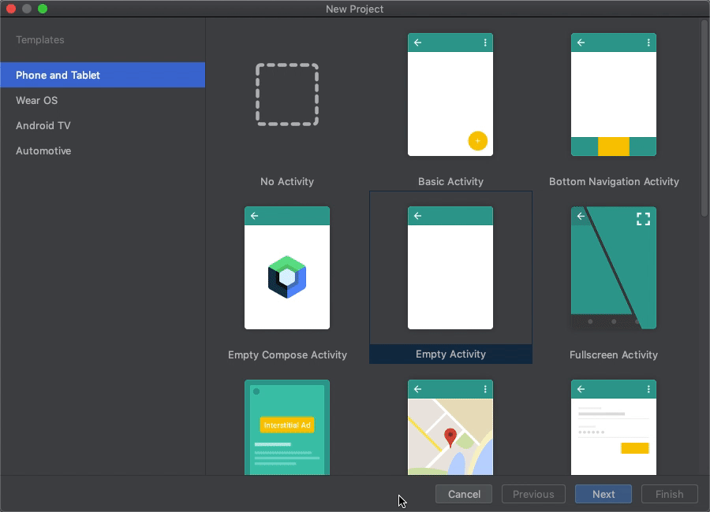
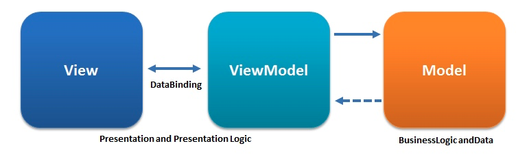
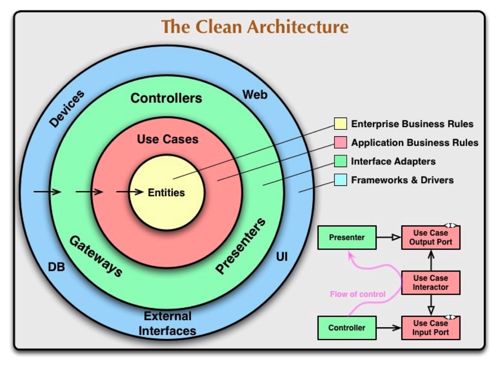
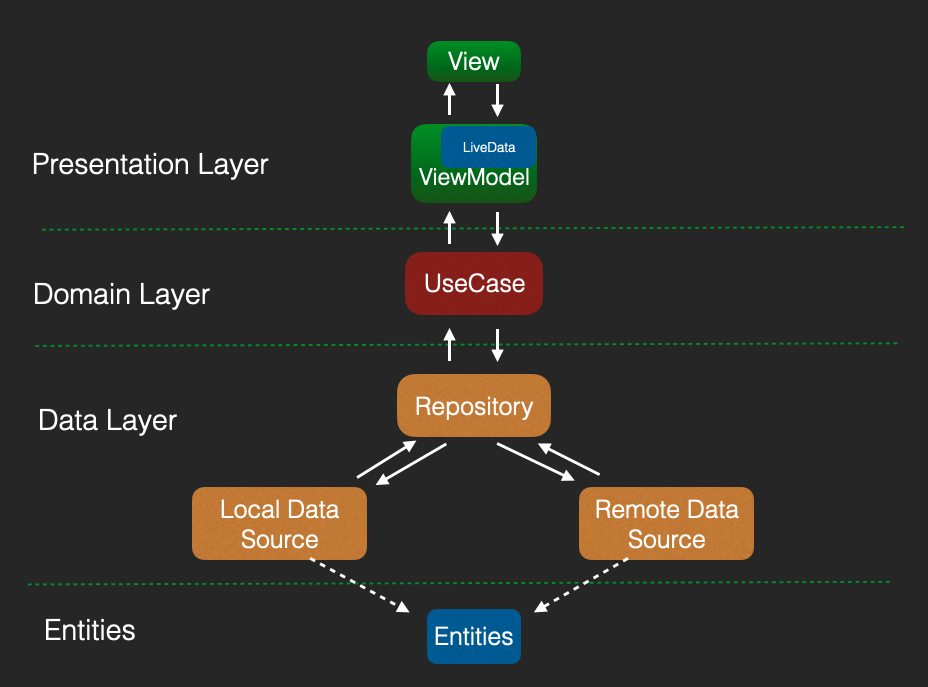
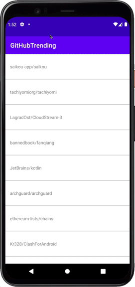
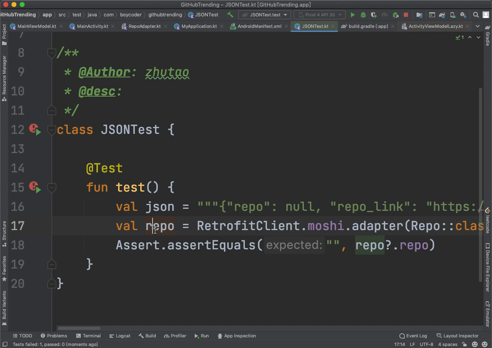
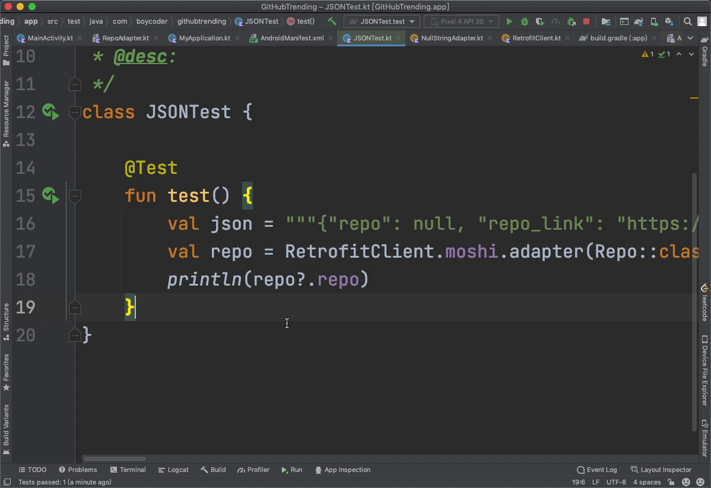

Audio用Kotlin写一个GitHubTrendingApp
你好，我是朱涛。
这节课，我们一起来用 Kotlin 和 Jetpack 写一个简单的 Android 应用。为了便于理解，这个应用的功能会尽量简单，即使你对 Android 不是特别熟悉，跟着课程的引导，你也能轻松完成。
准备工作
在之前的课程中，我们的实战项目都是基于 JVM 的，并没有涉及过 Android 相关的配置。因此，如果你的电脑没有 Android 开发的环境的话，那么可能需要做一些额外的配置。当然，在你已有 Java 环境的前提下，想要配置 Android 开发环境并不麻烦，你可以去搜索一些相关的Android 开发环境配置的教程。
那么，要进行 Android 开发，我们可以使用 IntelliJ，也可以使用 Android Studio，后者针对 Android 开发做了很多定制化，也是免费的，这里我也建议你去下载 Android Studio。
当配置好所有的环境以后，我们就可以像创建 Kotlin 工程一样，来创建一个新的 Android 工程了。

然后，当你创建好工程以后，就可以尝试运行代码了，这时候你大概率会看到一个 Hello World 的初始界面。
接下来，我们就正式进入开发吧。
MVVM 架构
Android 应用的架构，在过去的这些年里一直都在变化。最开始的 Android 其实没有什么明确的架构，大家习惯于把所有代码都往 Activity 里放，直到后来才开始有了 MVC、MVP 以及 MVVM。
那么，站在现在这个时间节点上，当前 Android 中比较主流、比较受 Google 推崇的，是 MVVM 架构。这节课，我们就以 MVVM 架构为基础，并且也尝试结合 Clean 架构来进行一些实践。
关于 MVVM 架构，它其实就是代表了 Model — View — ViewModel，如果将其对应到 Android 当中来的话，它们之间大概会是这样的关系：

MVVM 其实是一种广泛存在的架构模式，在 Android 当中也有类似的实现。ViewModel 会连接 View 和 Model，View 和 Model 之间是隔离开的。而 View 和 ViewModel 之间，也往往会存在数据绑定，这里的数据绑定可以是一个组件（如 Android 的 DataBinding），也可以是由代码来完成绑定。
而相比 MVVM 架构，Clean 架构则是一种更加抽象的思维模式了。它将整个架构大致分为三层，由外到内分别是：表现层、领域层、数据层。它们之间的依赖关系也是由外到内的。

不过 Clean 架构只是一种思想，当我们尝试在 Android 中落地应用的时候，其实并不一定会完全按照这里的架构图来设计，目前比较常见的架构是下面这样的：

可以看到，上面这个架构，融入了 MVVM 与 Clean 两个架构的特点，让我们从下往上看：
实体层，这里其实就是我们平时定义的一些 Bean 的实体类，用 Kotlin 的数据类即可。
数据层，这里一般会有两个概念，分别是 DataSource 与 Repository，前者代表数据源，后者代表数据仓库。数据源一般会区分本地数据源和远程数据源，而数据仓库则会统筹它们两者。
领域层，这里一般会是一些相对具体一些的业务逻辑。
表现层，这里则是接近 UI 展示的上层逻辑了。
好，架构分析完了，接下来我们看看代码该怎么写，我们还是按照架构的分层，从下往上来实现。
实体层
首先，我们要定义一个密封类，来统一不同情况下的数据形式。
sealed class ResultX<out R: Any> {
data class Success<out T: Any>(val data: T) : ResultX<T>()
data class Error(val exception: Exception) : ResultX<Nothing>()
object Loading : ResultX<Nothing>()
override fun toString(): String {
return when (this) {
is Success<*> -> "Success[data=$data]"
is Error -> "Error[exception=$exception]"
Loading -> "Loading"
}
}
}然后，由于我们是要实现一个 GitHub Trending 的应用，所以这里我们只需要找一个开源的 API，通过分析它的 JSON 结构，然后定义出具体的 Data Class 就行了。这一步，我们其实在第 12 讲当中就已经完成了。
data class RepoList(
var count: Int?,
var items: List<Repo>?,
var msg: String?
)
data class Repo(
var added_stars: String?,
var avatars: List<String>?,
var desc: String?,
var forks: String?,
var lang: String?,
var repo: String?,
var repo_link: String?,
var stars: String?
)不过，在之前的课程当中，我提到过以这种方式定义的数据类，其实还存在 2 个问题。
问题 1：不符合“不变性思维”，成员属性全部都是 var 定义的。
问题 2：不符合“空安全思维”，所有的类型都是可为空的。
那么针对这两个问题，我们像下面这样做，其实很容易就能搞定：
data class RepoList(
val count: Int = 0,
val items: List<Repo> = listOf(),
val msg: String = "数据为空"
)
data class Repo(
val added_stars: String = "",
val avatars: List<String> = listOf(),
val desc: String = "",
val forks: String = "",
val lang: String = "",
val repo: String = "",
val repo_link: String = "",
val stars: String = ""
)在这段代码中，我们是把 var 都替换成了 val，把所有的可空类型都改成了不可空类型，同时也为属性都提供了默认值。
当然，仅仅只是改变底层的实体类的定义还远远不够，具体遇到的问题，我们会在后面分析。下面我们接着来看数据层。
数据层
在数据层当中，最关键的就是 RepoDataSource 和 Repository。那么首先，我们就要定义它们对应的接口。你可以参考这里的实现：
interface RepoDataSource {
suspend fun getRepos(): ResultX<RepoList>
}
interface IRepository {
suspend fun getRepoList(): ResultX<RepoList>
}接下来，就是它们对应的实现类了，我们先来看看数据源怎么处理。
由于我们需要请求网络，所以这里我们自然就会想到 OkHttp 和 Retrofit 了。虽然我们也可以使用自己写的 KtHttp，但它毕竟只是用于学习和研究目的而编写的，并不适合真的拿来用。
object RetrofitClient {
private const val TAG = "OkHttp"
private const val BASE_URL = "https://baseUrl.com/"
private const val TIME_OUT = 10
val moshi: Moshi by lazy {
Moshi.Builder()
.add(KotlinJsonAdapterFactory())
.build()
}
val service by lazy { getService(RepoService::class.java, BASE_URL) }
private val client: OkHttpClient by lazy {
val builder = OkHttpClient.Builder()
builder.connectTimeout(TIME_OUT.toLong(), TimeUnit.SECONDS)
builder.build()
}
private fun <S> getService(
serviceClass: Class<S>,
baseUrl: String,
client: OkHttpClient = this.client
): S {
return Retrofit.Builder()
.client(client)
.addConverterFactory(MoshiConverterFactory.create(moshi))
.baseUrl(baseUrl)
.build().create(serviceClass)
}
}
interface RepoService {
@GET("repo")
suspend fun repos(@Query("lang") lang: String = "Kotlin", @Query("since") since: String = "weekly"): RepoList
}其实，当我们自己手写了 KtHttp 的源码以后，Retrofit 用起来就会非常顺手。这里我们是定义了一个单例 RetrofitClient 用来请求 API，还有 RepoService 来代表具体的请求参数规则。
那么有了 Retrofit 以后，我们要处理数据源也就很容易了。
object RemoteRepoDataSource : RepoDataSource {
const val TAG = "RemoteRepoDataSource"
override suspend fun getRepos(): ResultX<RepoList> =
withContext(Dispatchers.IO) {
try {
Success(RetrofitClient.service.repos())
} catch (e: Exception) {
Log.e(TAG, e.message, e)
Error(e)
}
}
}在这里，我们定义了一个 RemoteRepoDataSource，它实现了 RepoDataSource 这个数据源的接口。而它具体的实现方法，是使用 withContext{} 将 API 请求分发到了 IO 线程池，然后根据实际的运行结果，将数据封装成对应的 ResultX 的子类型。
接着就是数据仓库了，它一般是用于统筹缓存数据、远程数据的，这里为了不引入过多的复杂度，我们简单来实现：
class MainRepository(
private val dataSource: RepoDataSource = RemoteRepoDataSource,
private val localDataSource: RepoDataSource? = null
) : IRepository {
override suspend fun getRepoList(): ResultX<RepoList> {
// 暂不处理缓存逻辑
return dataSource.getRepos()
}
}你可以看到，它其实就是数据源的一层封装而已。
好，至此，我们的数据层就已经完成了。
领域层
所谓领域层，其实就像是业务逻辑的一个小单元，这里的小单元，我们可以将其称为 UseCase。
class GetRepoListUseCase(private val repository: IRepository = MainRepository()) {
suspend operator fun invoke(): ResultX<RepoList> {
return repository.getRepoList()
}
}在当前的案例中，我们只有一个业务场景，也就是获取 GitHub 仓库的列表，所以这个 UseCase 的逻辑也很简单。不过你要知道，在实际的工作场景中，UseCase 是可以承载复杂的业务逻辑的。
接下来，我们往上看一下表现层。
表现层
到了表现层这里，我们其实就已经非常接近 UI 了，具体来说，这里主要涉及到 ViewModel 还有 Activity、Fragment。我们先来看看 ViewModel。
class MainViewModel(
val getRepoListUseCase: GetRepoListUseCase = GetRepoListUseCase()
) : ViewModel() {
val repos: LiveData<RepoList>
get() = _repos
private val _repos = MutableLiveData<RepoList>()
fun loadRepos() {
viewModelScope.launch {
val result = getRepoListUseCase()
when (result) {
is ResultX.Success -> {
_repos.value = result.data
}
is ResultX.Error -> {
_repos.value = RepoList()
}
ResultX.Loading -> {
// 展示Loading
}
}
}
}
}在 loadRepos() 这个方法中，我们用到了 viewModelScope.launch {} 来启动协程。经过上节课的学习，我们知道以这种方式启动的协程是不会发生泄漏的，其中的协程任务会随着 Activity 的销毁而取消。
OK，最后，就是 Activity 当中的逻辑了。
class MainActivity : AppCompatActivity() {
// 1
private val viewModel: MainViewModel by viewModels()
// 2
private lateinit var binding: ActivityMainBinding
private lateinit var adapter: RepoAdapter
private val layoutManager = LinearLayoutManager(this, LinearLayoutManager.VERTICAL, false)
override fun onCreate(savedInstanceState: Bundle?) {
super.onCreate(savedInstanceState)
binding = ActivityMainBinding.inflate(layoutInflater)
setContentView(binding.root)
viewModel.loadRepos()
observeData()
}
private fun observeData() {
// 3
viewModel.repos.observe(this) {
display(it)
}
}
private fun display(repoList: RepoList) {
adapter = RepoAdapter(repoList)
binding.recycler.layoutManager = layoutManager
binding.recycler.adapter = adapter
}
}上面 Activity 的逻辑也很简单，其中有几个注释，我们一起来看看：
注释 1，这里我们使用了委托的语法，将 ViewModel 的创建交给了"by viewModels()"。它其实是 Activity 的一个扩展函数，是由 KTX 实现的。
注释 2，ActivityMainBinding，这里我们使用了 Jetpack 当中的 ViewBinding，这样我们就不用写烦人的 findViewById() 了。
注释 3，viewModel.repos.observe{}，这里我们完成了 ViewModel 当中 LiveData 的数据监听，当我们的网络请求有结果以后，它就会立刻被回调。
另外，以上代码中还涉及到了一些 RecyclerView 相关的适配器逻辑，也非常简单：
class RepoAdapter(private val repoList: RepoList): RecyclerView.Adapter<RepoHolder>() {
override fun onCreateViewHolder(parent: ViewGroup, viewType: Int): RepoHolder {
return RepoHolder(LayoutInflater.from(parent.context).inflate(R.layout.item_repo, parent, false))
}
override fun onBindViewHolder(holder: RepoHolder, position: Int) {
holder.text.text = repoList.items.getOrNull(position)?.repo
}
override fun getItemCount(): Int = repoList.count
}
class RepoHolder(itemView: View): RecyclerView.ViewHolder(itemView) {
val text : TextView = itemView.findViewById(R.id.text)
}也就是，为了让 RecyclerView 正确展示数据，我们需要实现一些方法，以上这些都是一些模板代码。
最后，在运行代码之前，我们还需要给 App 增加一个网络权限。
<uses-permission android:name="android.permission.INTERNET" />这个时候，如果你在模拟器或者真机上运行的话，就会看到类似这样的一个效果：

那么，到这里，我们的代码是不是就写完了呢？其实并没有。
空安全
因为，我们还有一个问题没有解决：如果服务端返回的 JSON 字段是 null 的话，我们的程序仍然会出错。具体来说，我们可以用这个单元测试来模拟。
@Test
fun test() {
// 强行返回null
// ↓
val json = """{"repo": null, "repo_link": "https://github.com/JetBrains/kotlin", "desc": "The Kotlin Programming Language.", "lang": "Kotlin", "stars": "40,907", "forks": "5,067", "added_stars": "98 stars this week", "avatars": ["https://avatars.githubusercontent.com/u/292714?s=40&v=4", "https://avatars.githubusercontent.com/u/1127631?s=40&v=4", "https://avatars.githubusercontent.com/u/908958?s=40&v=4", "https://avatars.githubusercontent.com/u/3007027?s=40&v=4", "https://avatars.githubusercontent.com/u/888318?s=40&v=4"]}"""
val repo = RetrofitClient.moshi.adapter(Repo::class.java).fromJson(json)
println(repo?.repo)
}
/*
报错：
Non-null value 'repo' was null at $.repo at com.squareup.moshi.internal.Util
*/
其实，当我们利用空安全思维，将 Repo 中所有的成员都定义成“非空类型”以后，当 API 不返回某个字段的时候，程序是可以自动填充默认值的。但是，当 API 强行在接口当中返回 null 的时候，我们的程序还是会崩溃。
为了解决这个问题，我们需要为 JSON 解析框架 Moshi，配置一个额外的规则：
object NullStringAdapter {
@FromJson
fun fromJson(reader: JsonReader): String {
if (reader.peek() != JsonReader.Token.NULL) {
return reader.nextString()
}
reader.nextNull<Unit>()
return ""
}
@ToJson
fun toJson(writer: JsonWriter, value: String?) {
writer.value(value)
}
}这个 Adapter，其实就是在服务端返回 null 的时候，我们做一层兼容，将其替换成默认值。它的用法也很简单：
object RetrofitClient {
// 省略
val moshi: Moshi by lazy {
Moshi.Builder()
.add(NullStringAdapter) // 变化在这里
.add(KotlinJsonAdapterFactory())
.build()
}
}这样，当我们把这个 Adapter 配置到 Moshi 当中以后，单元测试就可以正常通过了。

小结
好，这节课的内容到这里就差不多结束了。让我们来做一个简单的总结。
MVVM，是一种常见的架构模式，在 Android 当中，一般会借助 ViewModel、LiveData 之类的组件来实现。在实战当中，我们还可以将其跟 Clean 架构的思想相结合，将整体应用的架构分为四层：实体层、数据层、领域层、表现层。
实体层，在大部分架构设计当中，实体层会和数据层进行融合，不过在这节课当中，我们将其单独抽了出来，放在了整个架构的最底层，通过密封类、数据类来实现的。
数据层，这里有两个概念，分别是“数据源”和“数据仓库”。数据源一般会分为缓存数据与远程数据，数据仓库则负责统筹多种数据源。
领域层，这里会涉及到业务逻辑的最小单元，我们一般将其称为 UseCase。
表现层，这里会涉及到数据与 UI 交互的逻辑。ViewModel 当中会封装 UseCase，并且持有数据和 View 进行交互。
最后，我们还根据实际情况，对 JSON 解析库 Moshi，做了额外配置，让它可以对服务端返回 null 的时候，仍然保持兼容，不会出现空指针异常。
那么，如果你本身对 Android、MVVM、Clean 架构都不是很熟悉，也许在学习这节课的过程中会有点不太适应。这时候，你可以去 GitHub 下载本课程对应的 Demo，来实际运行和调试，以加深印象，链接在这里。
思考题
这节课，我们融合 MVVM 和 Clean 完成了一种混合架构，请问这种架构有什么样的优点和缺点呢？
COMMUNITY NOTES
读者评论
这篇文章暂时没有读者留言。